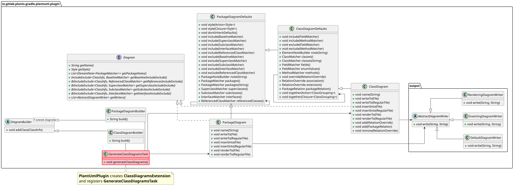
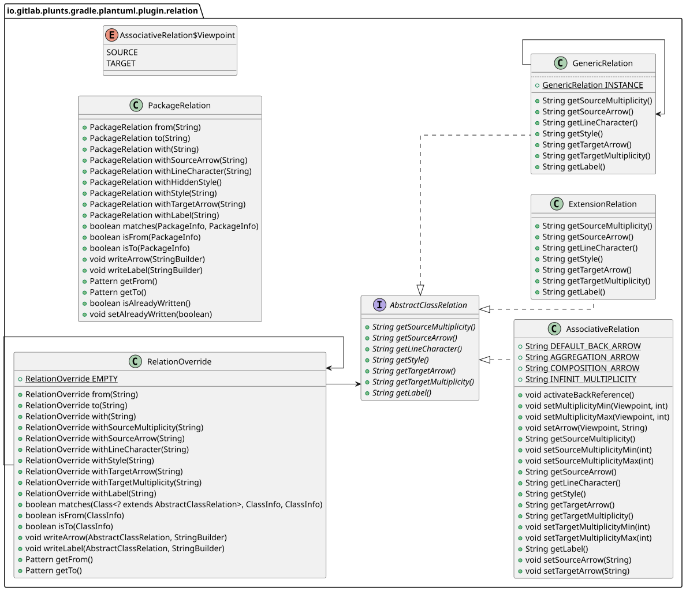
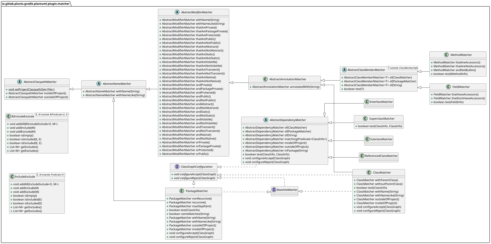

The following are diagrams, generated with the plantuml-gradle-plugin for a better understanding of the architecture of the plugin. To create the svg diagrams and this file call:
./gradlew generatePluginDiagrams


